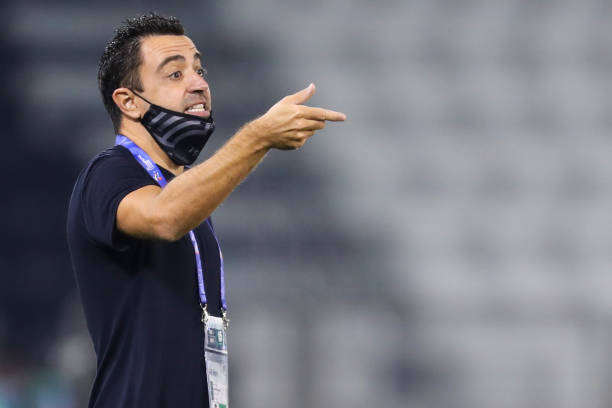

Xavier Hernández Creus, known as Xavi, is a Spanish professional football manager and former player who is the manager of La Liga club Barcelona. Widely considered one of the greatest midfielders of all time, Xavi was renowned for his passing, vision, ball retention, and positioning.
Born: 25 January 1980 (age 41 years), Terrassa, Spain
Height: 1.7 m
Career end: 20 May 2019
Spouse: Núria Cunillera (m. 2013)
Number: 6 (FC Barcelona / Midfielder), 6 (Al Sadd SC / Midfielder), 6 (Catalonia national football team / Midfielder)
Teams coached: FC Barcelona (Head coach, since 2021), Al Sadd SC (Association football manager, 2019–2021)
Nicknames: La Computadora, The Puppet Master, Xavi